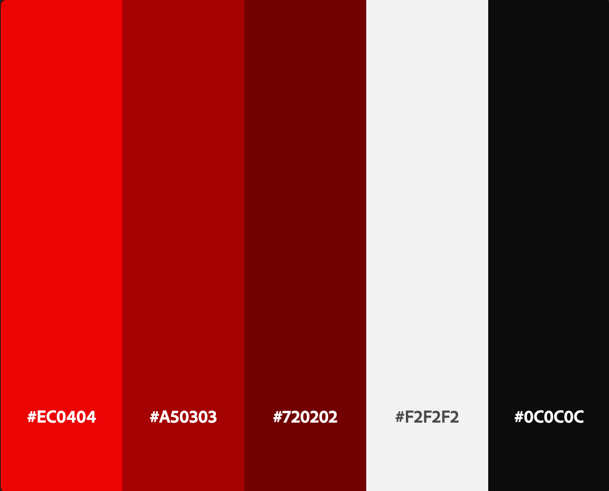
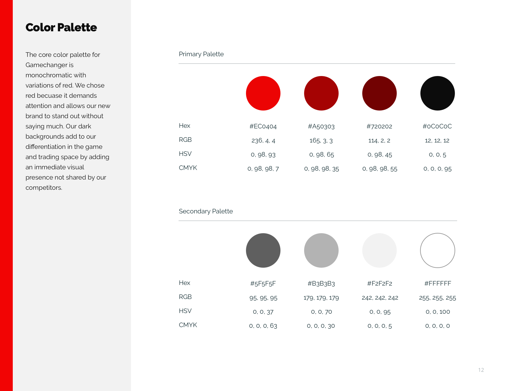
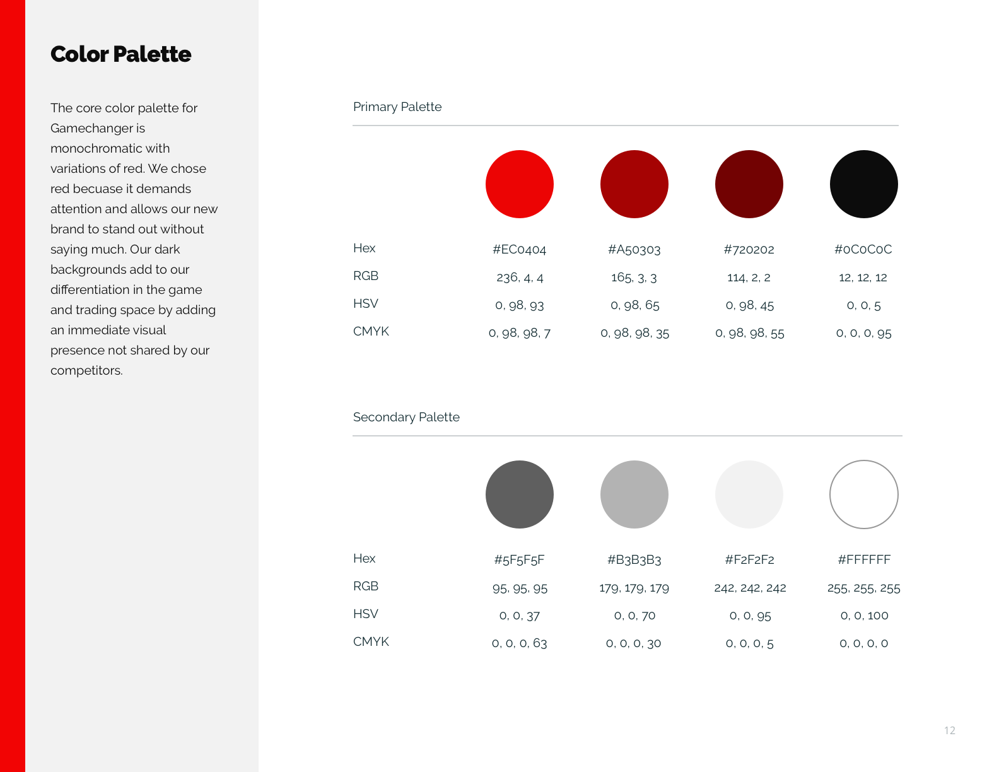

Design Roles
- UX Design
- Visual Design
- Branding & Identity
Deliverables
- User Surveys
- Competitive Analysis
- User Personas
- User Flows
- User Stories
- Sitemap
- Wireframes
- Concept & Identity
- Logo Design
- Style Guide
- User Testing
- High Fidelity Mockups
- Clickable Prototype
Specifications
- Duration
- 8 weeks
- Tools
- Sketch
- Figma
- InVision
- Adobe Creative Suite
- Maze
- Usability Hub
Summary
GameChanger is a concept trading application that’s all about simplicity. Someone has what someone else wants, they message each other, work out a deal and exchange items. Trades happen in a visual interface allowing users to see what people have and send an offer. Bartering is nothing new, but giving it a focused audience, easy posting features, and a modern feel helps bring this ancient form of business into the new era.
Problem
Games are expensive. Add to this the sheer amount of games released feels like a new one is here every day. On top of that, limited print publishers are making incredible must-own titles in very few quantities, with no signle database to find them all. And if you’re a game collector, finding physical releases of games has you deal with bloated prices or old antiquated web-only apps. Or worse, some sites use confusing currency or “credits” and dictate the value of your merchandise.
Solution
GameChanger to the rescue.
The Marketplace offers plenty of filters to narrow down the search to that perfect game, console or collectible. The Profile page helps traders see what someone owns and what they want. Traders decide to accept offers or counter their offer from their Inbox. It’s also concerned with verifying users to make sure transactions instill trust and build a better community. Click the prototype to explore my concept or read below and dive a little deeper into how I created it.
Process
User Surveys
I started my project by exploring what potential users had to say about trading gaming items in general. I was surprised when I asked about whether the “App should let me make trades with people who live far away from me.” It wasn't as popular as I thought it would be. But not having to deal with shipping, Paypal, payments and the like, let me focus on the app's core functionality instead of finding ways to introduce a 3rd-party payment system and shipping options.
Survey Highlights
- Nearly 60% of survey participants have never traded a gaming item
- Around 40% of people surveyed said they had 2-5 gaming systems.
- Another 40% of participants said they owned 5 or more gaming systems
- When asked if they were interested in trading gaming items nearly 80% of people surveyed answered “Yes”
- Most Wanted Features:
- App should be free to download
- App will let me complete trades with people near me
- App will let me see if users are verified
- App will let me make trades with several items at once
Competitive Analysis
I chose two game trading platforms (Leaptrade and GameTZ) as well as two big marketplace companies (Ebay and Craigslist) for my analysis. I knew that I could learn about specific niche problems with my first companies because they focused on the trading within the gaming community, while I would learn a lot about setting up good marketplace options from Ebay and Craigslist. In the end I wanted to take the simplicity of what Craigslist does, marry it with the gamer focus of GameTZ and Leaptrade but with a more modern look.
GameTZ
+ Gamer focus
+ Free
- Website looks dated
- Hard to get started
Leaptrade
+ Easy upload of trading items
+ Versatile (buy, sell or trade)
- Trades happen with "credit" currency
- Lack of mobile app
Ebay
+ Market leader
+ Millions of daily users
- Fees, fees & fees
- Bloated with features
Craigslist
+ No account necessary
+ Easy to search
- Transactions not monitored
- Legitamcy of users
User Personas
The survey data and interviews of respondents allowed me to build 3 personas with different goals. Mike an expectant father who needs to make room for his new baby, Javier a casual gamer who sees games as a way to spend quality time with his girlfriend and Sophie who hunts down her favorite rare collectibles.
Mike
35 / Married
Operations Engineer Manager - SF, CA
Bio
Mike works a job managing engineers at a power company. Together with his wife and daughter they live in a modest home which is fine for them now, but with a new baby on the way they are worried about space. When he’s not doing strength yoga, Mike ends up de-stressing by playing video games after his daughter is asleep. Mike hopes that having the right games can bring his family together.
Frustrations
Mike wants to play different games but doesn’t always know titles beyond the shooters he normally plays. He wants to trade, but his circle of friends all have the same games. With a new baby on the way, Mike is worried buying new games seems like a waste of money. He's also worried he won't be able to offer much to traders since he has a big digital library.
“If I played different games my family could join the fun”
Javier
28 / Single
IT Specialist - Oakland, CA
Bio
Javier works as an IT specialist at a local tech company. He lives with his girlfriend in Oakland and has 2 dogs. Between his job, his developer bootcamp, his girlfriend and his pets, Javier stays pretty busy. With his time crunched, and wallet strapped, Javier plays only a few hours a week- mostly on weekends. Now that his girlfriend is playing more with him he wants to find other gaming options to play together as a way to spend quality time.
Frustrations
Javier doesn't like meeting people for trades because in the past it has taken too long to find a suitable time and place. Because he doesn't game much, he doesn't always know what titles are worth having or trading for. His part-time job let him buy a lot of games and he doesn't find deals on physical games as often as digital ones.
“I like video games, but they can get expensive”
Sophie
22 / Single
Student - Hong Kong, HK
Bio
Sophie is a student studying communications in Hong Kong. She has a decked out gaming laptop that she uses for her schoolwork and her PC gaming. She also has a collection of rare toys and figurines from video game franchises she loves. She likes physical media, but prefers to collect digital titles because it’s the most convenient for her. While PC gaming is still her favorite, her figurine collection is nearing 50 characters and has recently become her latest gaming obsession.
Frustrations
Sophie worries she may not find collectibles she's looking for in her part of the world. She also finds it difficult to trade because she can't easily find what others want to receive in exchange. Sophie has had some bad experiences in online gaming communities and worries this platform won't be safe.
“I want to collect all my favorites, but it's so hard”
User Flows
I created a few important flows that combined what my user personas wanted to accomplish as well as important high priority items from the user stories. I found it interesting that at this point I created what I thought was a good flow for "Rejecting a Trade," but in practice I would eventually have to rethink this flow at the wireframe stage.


Sitemap
Having a good idea of what screens I wanted to represent in my app I made a sitemap with a general idea of what it would feature. Looking at the app like this made it seem a lot simpler than I originally imagined.
Wireframes
Taking note of the screens I wanted to create with the app, I sketched a paper version of the wireframes. It helped me keep my ideas clear because if I can't sketch them on paper, there's no way I could do it in Sketch or Figma.


Being somewhat satisfied (let‚Äôs be honest, when is a designer 100% satisfied üòú), I then moved on to creating the digital wireframes focusing on the big concepts of signing in/up, sending trades, countering trades, adding and deleting items for trades. Select digital wireframes are shown below.


I made a quick lo-fi prototype and ran some tests of the basic features of the app. Using Maze's amazing tests with heatmaps of all clicks and taps, I was able to see where my users thought they should press and the heatmaps were instrumental in implementing changes. It was particularly obvious that I needed to work on the Inbox page as people were clicking in all sorts of places.

Branding & Identity
Switching gears a bit it was time to figure out a name for my app. As with most projects I started with a mind map to get words that were tangential to the experience of games and trading. Pairing this with a word list I started combining one column with the other along with clever ideas that just came to me. The frontrunners at that point were:
- - Bartur
- - Faire
- - Shwap
- - Square Deal
- - GameChanger
I thought they were all decent names, but GameChanger felt like it could immediately be heard and recognized as a game trading platform. It was also a clever play on words because users would literally exCHANGE GAMEs. There’s also the concept of being a “gamechanger” or something that changes the progression of everything else moving forward. They were powerful ideas that I thought captured the essence of the app.
Logo
Once I got to drawing I kept finding myself drawing arrows on variations of Gs. I had other concepts that were more out there (why the mohawk guy!?) but I knew that there was something unique about the G shape and the arrows helped convey the trading aspect of the platform. Because GameChanger is all about an exchange, I was inspired by arrows designs that centered around this idea.

Many of my first digital ideas involved arrows and stylized Gs.
Even with all those ideas and I didn't quite have a logo that conveyed trading and could stand as a logomark. The biggest issue was that if the logomark is part of the logotype that could limit its use. Deterred, but not defeated I went back to the drawing board and focused on simpler shapes like a circles for the logomark. I was looking for inspiration in other logos like Mastercard and also the GQ logo. Starting with 2 circles I played around with some arrow concepts until I landed on the current version of the GameChanger Logo. Check out the animation below for a final look.
The final logo is simple, conveys trading, and works well on its own. I always thought that logo design involved a lot of intense drawing, but I've found that the simplest logos work best. I've also created a lockup featuring a logotype using the Gasalt typeface with slightly altered x-height.
final logos


Color & Typography
Creating a bold, gamer-centered marketplace I decided on a mostly black interface with a monochrome palette to give the app a modern, sleek feel. But if GameChanger was going to be bold, I needed a bold color. I chose red as its signature color because it demands attention, without doing much. If I’m being honest, it’s also a subtle homage to Nintendo, which uses red as its main color and many of my users told me they supported Nintendo as a company more than any other brand. Varying shades of red were also chosen to support the monochromatic color scheme.
I have been looking for ways to find a good serif font as a headline and thought this may be a good time to try. I eventually narrowed down my choices to 4 options each with a unique contrasting typeface. Usability Hub helped me create a user test but I had no clear winner for a favorite so I decided to choose the typeface that best represented GameChanger- bold and slightly playful. The ligatures of Raleway made me think of a serif font, but it was still a sans serif with a slight boldness to it. I decided to stick to one family because font pairing seemed too forced when I tried a few combonations.

Style Guide
Putting all these ideas together in a Style Guide I showed examples of the logo being used in ways that I thought GameChanger as a company would want their brand represented. Making this Digital Branding Guide was a lot of fun and despite the constant revisions. I was always glad I made it when I had questions on how to represent this brand.

 

High Fidelity Mockups
One of the biggest changes from early versions of the mockups to later versions involved the way users add items to their trading list. Originally I created a large button that floated on top of the Profile page. It's trendy, eye-catching and I thought there's no better way to catch someone’s attention than a big, red "+" symbol. And while yes it was eye catching, something about it always felt a bit off in comparison to the rest of the design. I worked on a way to keep this visible but also stay true to GameChanger’s look. I shrunk the size of the “+” and placed it within a rectangle along with text indicating what pressing it would do.


User Testing
Finishing the mockups I went to test some of the usability using Maze. To my surprise it looks like I still hadn’t solved my Inbox issue. See my first version and its heatmap below.
You can see the heatmap for the Inbox screen had too many hotspots and my users were confused with this page. I reordered items, changed font weights, added some spacing and created a better way to show a new message. Shown below is the revised Inbox page as well as its heatmap showing users consistently clicking the proper area to check their new message. Data now helps me say confidently that I improved usability here.

I also got some remote testing done. Here's my user talking about how I could improve sending a trade.
Prototype
The above video is a snippet of the final Sign Up flow for GameChanger. The full prototype includes changes made based on user tests, preference tests and design feedback. I've shown off a few more screens below as well as a link to the final prototype.


What I've Learned
Looking back at the original problem I think GameChanger would be
a worthy app to help gamers find what they want for no money out
of pocket. I know that an app with no clear path to build revenue
seems very idealistic, but some of the biggest apps of today
started like that (Twitter and Facebook come to mind). They found
ways to monetize only after they had millions of users who wanted
their product. Thinking about it that way, users could potentially
pay to spotlight their trade items or be alerted when particular
items are available. It would be an easy way to monetize a part of
the experience, completely optional, while maintaining a free core
user experience for everyone else.
If I had more time I would like to build out a few screens of how
to verify a user. Related to this, it would be nice to show a few
screens on how someone would rate a user after a successful
transaction. Verification was one of the most important features
for users according to survey responses. I think I showed where I
was going with that idea, but given more time I could show exactly
what that would look like. Building a community takes dedicated
members and all the big marketplace apps have some form of review
or validation. I know that with those screens built, I could
convey the important community aspects of the platform and help
build a safe and trustworthy space.